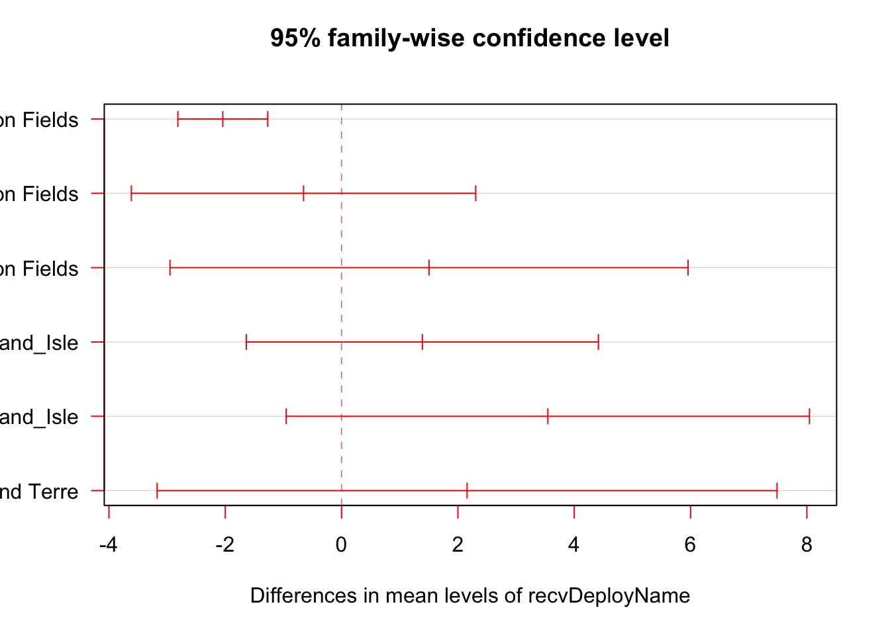

1 Methods
1.1 Data Download
Least Tern detection data was downloaded from Motus using the motus R package, and then filtered to remove false positive detections. Detailed information on data download processes, formats, and false detections can be found here: https://motus.org/MotusRBook/.
1.2 Data Cleaning
Strings of detections with only 2 consecutive detections at a station (run length = 2) are questionable and may indicate the tag was just barely within range of the station, or more likely, that it is a false positive produced by background radio noise which is present to varying degrees at all stations.
To begin, several tags were never detected near the breeding site and were removed (2017 Lotek tag ID’s 95, 96, 97, 2018 Lotek tag ID 315). Then, detections at stations outside the tagging area with a run length of 2 were deemed to be false positives and removed. Each remaining tag was then visually inspected to examine detections that occurred at questionable latitudes far from the breeding site. Several stations had large numbers of detections with low run lengths, this is characteristic of stations with high levels of background radio noise which can often result in false positives. These stations were Drasher, RTNJ, Koffler, Waggoners Gap, Burntpoint, Los Vientos Forest, and D’Estimauville. Further inspection of detections at these stations showed that it would be biologically impossible for birds to make the flight between detections on the breeding ground and subsequent detections at these stations in the amount of time between consecutive detections. Therefore, all detections at these stations were deemed to be false positives due to noisy sites.
Remaining detections far from the tagging location were examined, many had run lengths of only 2 which are questionable at best and were deemed to be false positives. Others with run lengths of 3 or 4 were not biologically possible flights such as between the tagging area and eastern Canada.
All detections deemed to be false positives were added to a custom filter that was applied to the data and were excluded from further analysis.
Detailed data filtering methodology with complete R code is available in Appendix A.
1.3 Data Manipulation
Detailed nest monitoring records were used to determine tag retention and incubation periods. To determine incubation period, each tag was assigned an end date based on the “Fate” variable, once a nest’s fate was categorized as either “failed nest”, “successful nest”, or “eggs due to hatch but no chicks found”, it was assigned an end date of that day; the “nestEnd” variable.
Lotek tag ID’s 114 and 316 did not have any nest records, as their incubation period could therefore not be determined, they were excluded from further analysis.
Several tags were only detected for a short period of time; for meaningful results, tags that were detected for less than 24 hours were excluded from further analysis (Lotek tag ID’s 85, 98, 120, 130, 286, 288, 309, 312).
| Year | motusTagID | mfgID | First Detection | Final Detection | Detection Period (days) | Number of Sites |
|---|---|---|---|---|---|---|
| 2017 | 23209 | 84 | 2017-06-14 19:13:51 | 2017-06-16 07:54:11 | 1.5280160 days | 2 |
| 2017 | 23210 | 85 | 2017-06-13 18:23:28 | 2017-06-14 11:49:19 | 0.7262788 days | 2 |
| 2017 | 23212 | 87 | 2017-06-13 19:02:47 | 2017-06-15 08:46:36 | 1.5720887 days | 2 |
| 2017 | 23214 | 89 | 2017-06-13 18:45:24 | 2017-06-18 06:45:36 | 4.5001392 days | 2 |
| 2017 | 23216 | 91 | 2017-06-08 15:42:56 | 2017-06-30 23:53:53 | 22.3409424 days | 3 |
| 2017 | 23217 | 92 | 2017-06-08 11:05:46 | 2017-06-10 06:36:22 | 1.8129139 days | 2 |
| 2017 | 23218 | 93 | 2017-06-08 13:11:20 | 2017-06-19 15:57:39 | 11.1154951 days | 3 |
| 2017 | 23219 | 94 | 2017-06-05 17:54:18 | 2017-06-12 19:34:05 | 7.0692972 days | 2 |
| 2017 | 23223 | 98 | 2017-06-08 10:24:45 | 2017-06-08 12:12:27 | 0.0747868 days | 1 |
| 2017 | 23225 | 100 | 2017-06-06 13:42:58 | 2017-06-11 15:21:11 | 5.0682081 days | 2 |
| 2017 | 23226 | 101 | 2017-06-05 16:51:07 | 2017-06-08 09:21:16 | 2.6876057 days | 2 |
| 2017 | 23227 | 102 | 2017-06-13 20:04:12 | 2017-06-15 06:59:29 | 1.4550556 days | 2 |
| 2017 | 23244 | 120 | 2017-05-24 16:28:18 | 2017-05-24 17:04:05 | 0.0248418 days | 2 |
| 2017 | 23245 | 121 | 2017-05-24 17:32:52 | 2017-05-28 10:13:52 | 3.6951399 days | 2 |
| 2017 | 23246 | 122 | 2017-05-24 13:45:29 | 2017-05-27 09:55:23 | 2.8402087 days | 2 |
| 2017 | 23248 | 124 | 2017-05-22 17:48:08 | 2017-05-25 07:21:54 | 2.5651166 days | 3 |
| 2017 | 23249 | 126 | 2017-05-22 16:51:49 | 2017-05-24 08:48:42 | 1.6645054 days | 2 |
| 2017 | 23251 | 129 | 2017-05-22 16:24:28 | 2017-05-31 09:48:09 | 8.7247749 days | 3 |
| 2017 | 23252 | 130 | 2017-05-24 14:26:26 | 2017-05-24 14:50:43 | 0.0168660 days | 1 |
| 2017 | 23257 | 135 | 2017-05-16 15:21:24 | 2017-05-24 16:44:46 | 8.0578901 days | 3 |
| 2017 | 23258 | 137 | 2017-05-19 06:24:57 | 2017-05-21 16:39:51 | 2.4270138 days | 2 |
| 2017 | 23259 | 138 | 2017-05-17 19:10:13 | 2017-05-22 09:58:09 | 4.6166171 days | 3 |
| 2017 | 23261 | 141 | 2017-05-16 08:23:27 | 2017-05-22 19:57:40 | 6.4820976 days | 3 |
| 2017 | 23262 | 142 | 2017-05-16 09:43:35 | 2017-05-19 08:38:08 | 2.9545508 days | 2 |
| 2017 | 23270 | 136 | 2017-05-17 18:38:48 | 2017-05-22 21:40:44 | 5.1263457 days | 6 |
| 2018 | 28520 | 283 | 2018-05-10 14:07:47 | 2018-05-27 21:27:46 | 17.3055448 days | 3 |
| 2018 | 28521 | 284 | 2018-05-10 15:15:55 | 2018-06-09 10:52:42 | 29.8172092 days | 2 |
| 2018 | 28522 | 289 | 2018-05-15 01:45:02 | 2018-05-18 14:26:29 | 3.5287893 days | 3 |
| 2018 | 28523 | 290 | 2018-05-16 11:49:11 | 2018-05-28 11:44:27 | 11.9967108 days | 3 |
| 2018 | 28524 | 293 | 2018-05-16 12:46:21 | 2018-05-26 23:32:20 | 10.4486082 days | 2 |
| 2018 | 28525 | 296 | 2018-05-17 19:21:18 | 2018-05-27 23:48:20 | 10.1854387 days | 2 |
| 2018 | 28526 | 306 | 2018-05-24 18:52:26 | 2018-05-28 12:10:34 | 3.7209200 days | 2 |
| 2018 | 28527 | 309 | 2018-06-08 19:22:32 | 2018-06-09 00:34:18 | 0.2164991 days | 2 |
| 2018 | 28528 | 310 | 2018-06-13 05:40:32 | 2018-06-14 14:21:22 | 1.3616923 days | 3 |
| 2018 | 28529 | 313 | 2018-06-14 23:41:05 | 2018-06-19 12:46:33 | 4.5454711 days | 3 |
| 2018 | 28592 | 298 | 2018-05-22 18:22:33 | 2018-05-26 08:53:39 | 3.6049341 days | 1 |
| 2018 | 28593 | 303 | 2018-05-24 01:55:54 | 2018-05-28 12:06:23 | 4.4239472 days | 2 |
| 2018 | 28595 | 282 | 2018-05-10 12:00:41 | 2018-05-21 12:32:49 | 11.0223161 days | 3 |
| 2018 | 28597 | 286 | 2018-05-14 11:53:26 | 2018-05-14 23:19:34 | 0.4764758 days | 2 |
| 2018 | 28598 | 287 | 2018-05-14 13:37:52 | 2018-05-18 07:44:11 | 3.7543804 days | 2 |
| 2018 | 28599 | 288 | 2018-05-14 13:41:57 | 2018-05-14 21:58:19 | 0.3446921 days | 2 |
| 2018 | 28600 | 291 | 2018-05-14 19:10:30 | 2018-05-19 19:28:19 | 5.0123684 days | 3 |
| 2018 | 28602 | 294 | 2018-05-16 16:35:22 | 2018-05-27 11:50:49 | 10.8024021 days | 3 |
| 2018 | 28603 | 295 | 2018-05-18 06:01:36 | 2018-05-26 15:55:30 | 8.4124330 days | 2 |
| 2018 | 28604 | 297 | 2018-05-17 19:03:49 | 2018-05-28 23:26:21 | 11.1823128 days | 2 |
| 2018 | 28605 | 299 | 2018-05-22 13:04:44 | 2018-05-31 17:47:37 | 9.1964506 days | 3 |
| 2018 | 28606 | 300 | 2018-05-22 17:37:26 | 2018-05-27 08:19:37 | 4.6126208 days | 2 |
| 2018 | 28607 | 301 | 2018-05-22 23:02:03 | 2018-05-27 23:59:39 | 5.0399898 days | 2 |
| 2018 | 28608 | 302 | 2018-05-22 19:32:17 | 2018-05-28 14:22:10 | 5.7846344 days | 3 |
| 2018 | 28609 | 304 | 2018-05-23 23:56:37 | 2018-05-28 11:26:27 | 4.4790540 days | 2 |
| 2018 | 28611 | 307 | 2018-06-08 23:06:12 | 2018-06-25 18:59:41 | 16.8288073 days | 3 |
| 2018 | 28613 | 312 | 2018-06-14 16:36:05 | 2018-06-14 21:49:50 | 0.2178772 days | 3 |
| 2018 | 28615 | 305 | 2018-05-23 23:58:47 | 2018-05-27 19:56:53 | 3.8320226 days | 3 |
1.4 Site Visits
To determine the frequency at which Least Terns visited each foraging area, detections at each station were grouped into distinct ‘visits’. A visit was categorized as a period of consecutive detections (in minutes) at a single station, or multiple periods of consecutive detections at a single station where there were fewer that 10 minutes between consecutive periods of detection. Detailed visit summaries are available in Appendix C.
For each year, an ANOVA test was initially used to determine if the length of visits differed between stations, results indicated that the mean time spent at stations differed significantly between stations for 2017 (p < 0.001) and 2018 (p = 0.001). A Tukey Test was then implemented to discern where the difference lay for both years. 